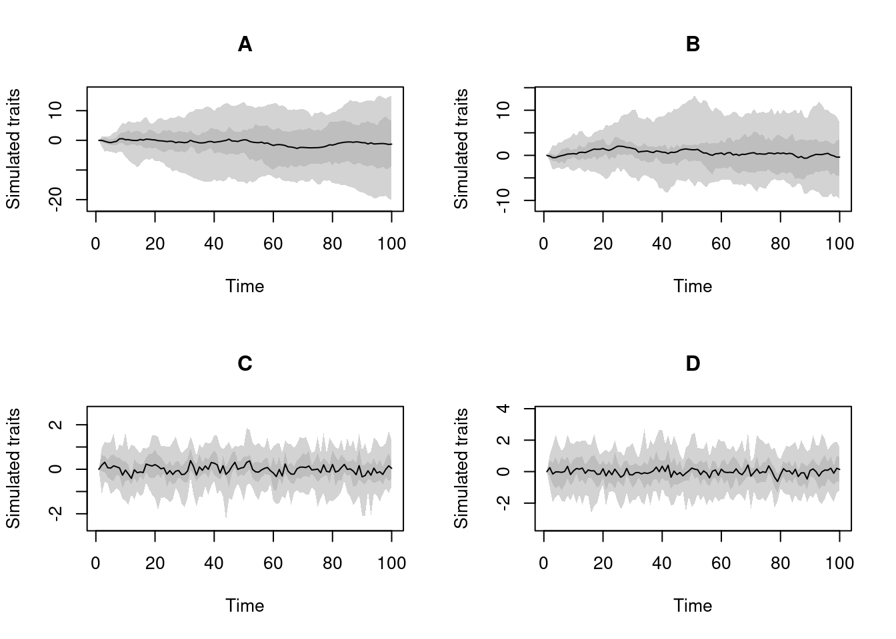

3 Simulating traits
In treats, traits are simulating by providing a traits object to the traits argument.
This object is generated using the make.traits.
What is a trait in biology? This is one of these epistemological question like what is a species that is not covered by all means in this package. For the purpose of this manual, biological trait can be any coherent process of any number of dimensions which can or cannot be independent. Basically anything can be a trait as well as it’s defined by the user (e.g. one trait can be a 20 dimensional Brownian process that’s correlated to a 1D OU process - which is another trait). For the purpose of the syntax in this package though, a trait in
treatsis a column in the output trait matrix. For example, one might be interested in a biological trait that is “beak shape” which is defined as one complex biological trait that is the Procrustes superimposition of 4 3D landmarks and 300 3D semi-landmarks. This single “beak shape” biological trait is then composed of 912 traits intreats(i.e. a matrix of \((4+300)\times3\) columns).
3.1 The process (process)
The function make.traits allows you to design the process of a trait or a set of traits.
Here, the process of a trait designates the rules to generate the trait through time while simulating a phylogeny.
This process can depend on the previous state in the tree (i.e. the trait of the ancestor) and the branch length to the descendant.
One classic example is the Brownian motion process (or Weiner process).
Note that it can depend on both the ancestor and the branch length but does not necessary needs (i.e. the process can be only based on the previous state or only on branch length or on neither).
3.1.1 The syntax (how to code a process?)
Trait processes in treats are functions that must always intake the following arguments by default.
x0: the previous trait value(s)edge.length: the branch length value...: a placeholder for any extra arguments
For example, the following function would be a valid process that always generate the true trait value: 42!.
In this example, the process is not dependent on neither the previous state (x0) and the branch length (edge.length).
## A valid (but useless?) process
valid.process <- function(x0 = 0, edge.length = 1, ...) {
return(42)
}Note that in this function definition the arguments
x0andedge.lengthhave a default value set to0and1respectively. In practice, these arguments are effectively set to the correct values in thetreatsinternal function (i.e. whateverx0andedge.lengthare at that specific time of the process) but providing a default can help speed up the algorithms (specifically all the internal checks).
On the other hand, the following process (a unidimensional Brownian motion) is incorrect (it’s missing edge.length and ...):
## A wrongly formated process
invalid.process <- function(x0 = 0) {
return(rnorm(1, mean = x0))
}3.1.2 Using a "process" in treats
You can design your own process as a function (as long as it has a valid syntax).
Alternatively, the treats package proposes inbuilt processes, namely a multidimensional Brownian motion (BM.process) or a a multidimensional Ornstein-Uhlenbeck process (OU.process).
You can find the list of implemented process by looking at the ?trait.process manual page in R.
Once a process is chosen, you can feed it to the make.traits function:
## Creating a trait object
my_trait_object <- make.traits(process = BM.process)This creates "treats" "traits" objects that you can print, and visualise using the plot function:
## The class of the object
class(my_trait_object)## [1] "treats" "traits"## What's in it?
my_trait_object## ---- treats traits object ----
## 1 trait for 1 process (A) with one starting value (0).## What does the process looks like
plot(my_trait_object)
Note that you can see the multiple options for plotting the trait process by looking at ?plot.treats manual. Furthermore, you can look at what’s actually in the object using this specific syntax (this applies to every object handled by the treats package):
## What's actually in that object?
print.treats(my_trait_object, all = TRUE)## $main
## $main$A
## $main$A$process
## function (x0 = 0, edge.length = 1, Sigma = diag(length(x0)),
## ...)
## {
## return(t(MASS::mvrnorm(n = 1, mu = x0, Sigma = sqrt(Sigma^2 *
## edge.length), ...)))
## }
## <bytecode: 0x56487cc36270>
## <environment: namespace:treats>
##
## $main$A$start
## [1] 0
##
## $main$A$trait_id
## [1] 1
##
##
##
## $background
## NULLAs traits can get more and more complex, the automatic printing of its summary allows for a easier display of what’s in the traits object.
Note that it is possible to make "traits" objects with multiple processes (that can be the same):
## 4 traits: two BM, one OU and one normal non process
four_traits <- make.traits(process = c(BM.process,
BM.process,
OU.process,
no.process))
four_traits## ---- treats traits object ----
## 4 traits for 4 processes (A, B, C, D) with one starting value (0).You can visualise them individually using the trait argument in plot.treats:
## Plot options (4 plots in one window)
par(mfrow = c(2,2))
plot(four_traits, trait = 1)
plot(four_traits, trait = 2)
plot(four_traits, trait = 3)
plot(four_traits, trait = 4)3.2 The number of traits n and the starting values start
Two further important arguments are n the number of traits per process and start the starting values for all traits.
By default they are set to n = 1 and start = 0.
This means that make.traits will assume that your processes are always unidimensional by default and that they always start with the value 0.
It is however possible to change these values.
For example you can use the following to create a three dimensional Brownian motion with each dimensions starting with the value 1:
## Multidimensional Brownian motion
make.traits(BM.process, n = 3, start = 1)## ---- treats traits object ----
## 3 traits for 1 process (A:3) with one starting value (1).Or the following with each dimensions starting with different values (respectively 1, 2 and 3):
## Multidimensional Brownian motion
make.traits(BM.process, n = 3, start = c(1,2,3))## ---- treats traits object ----
## 3 traits for 1 process (A:3) with different starting values (1,2,3).Note that the number of traits are distributed per processes. If the traits contains multiple process, the number of traits are distributed per processes:
## two 3D processes (BM and OU)
make.traits(c(BM.process, OU.process), n = 3)## ---- treats traits object ----
## 6 traits for 2 processes (A:3, B:3) with one starting value (0).## one 1D processes (BM) and one 4D process (OU)
make.traits(c(BM.process, OU.process), n = c(1, 4))## ---- treats traits object ----
## 5 traits for 2 processes (A:1, B:4) with one starting value (0).And starting values are distributed for all the traits or for the traits one by one:
## two 3D processes (BM and OU) starting with 1
make.traits(c(BM.process, OU.process), n = 3, start = 1)## ---- treats traits object ----
## 6 traits for 2 processes (A:3, B:3) with one starting value (1).## two 3D processes (BM and OU) starting with values 1 to 6
make.traits(c(BM.process, OU.process), n = 3, start = 1:6)## ---- treats traits object ----
## 6 traits for 2 processes (A:3, B:3) with different starting values (1,2,3,4,5,6).## two 3D processes (BM and OU) with the two first ones starting
## with 1 and the 4 other ones with the default (0)
make.traits(c(BM.process, OU.process), n = 3, start = c(1,1))## Warning in make.traits(c(BM.process, OU.process), n = 3, start = c(1, 1)): Only
## the first 2 starting values were supplied for a required 6 traits. The missing
## start values are set to 0.## ---- treats traits object ----
## 6 traits for 2 processes (A:3, B:3) with different starting values (1,1,0,0,0,0).3.2.1 What even is a trait?
The definition of what a trait is can vary quiet a lot depending on the context of an analysis and the field.
Because it would be impossible to accommodate all definitions in treats we had to go with an arbitrary one: a trait is whatever you define as a trait!
A trait can be uni-dimensional as the measurement of a feature of an organism (e.g. leaf surface, femur length, etc…) but can also be multi-dimensional description of a feature, for example in 3D geometric morphometric, a trait could be defined as “position of landmark X” (which will be a trait with three dimensions, x, y and z) or in ecology, the location of a plant can be a single 2D trait (expressed as latitude and longitude).
In treats, the process corresponds to this trait definition (e.g. a process can be of n-dimensions and represents one organisms feature) and the traits represents the number of dimensions in total.
So in the examples above, this is how the following traits are interpreted by treats:
## Three traits with one process:
make.traits(BM.process, n = 3, start = c(1,2,3))
## Six traits with two processes:
make.traits(c(BM.process, OU.process), n = 3)
## Five traits with two processes
make.traits(c(BM.process, OU.process), n = c(1, 4))3.3 Extra argument for the processes with process.args
You can also feed extra arguments to your process(es) functions. For example, the inbuilt process no.process (that is just a number generator not based on the previous value x0 or the branch length) can intake a specific random number generator as a function:
## no process trait using the normal distribution (default)
make.traits(no.process, process.args = list(fun = rnorm))## ---- treats traits object ----
## 1 trait for 1 process (A) with one starting value (0).
## process A uses the following extra argument: fun;## no process trait using the uniform distribution
## bounded between 1 and 100
make.traits(no.process, process.args = list(fun = runif, min = 1, max = 100))## ---- treats traits object ----
## 1 trait for 1 process (A) with one starting value (0).
## process A uses the following extra arguments: fun,min,max;You can also add multiple extra arguments for multiple processes giving them as a list.
## Two traits with no process:one normal and one uniform (1,100)
make.traits(process = c(no.process, no.process),
process.args = list(list(fun = rnorm),
list(fun = runif, min = 1, max = 100)))## ---- treats traits object ----
## 2 traits for 2 processes (A, B) with one starting value (0).
## process A uses the following extra argument: fun;
## process B uses the following extra arguments: fun,min,max;If one process do not need extra argument you must still give it and extra NULL process argument:
## Three traits with no process:
## one default, one lognormal and one uniform (1,100)
make.traits(process = c(no.process, no.process, no.process),
process.args = list(## Extra arguments for the first process (none)
list(NULL),
## Extra arguments for the second process
list(fun = rlnorm),
## Extra arguments for the third process
list(fun = runif, min = 1, max = 100)))## ---- treats traits object ----
## 3 traits for 3 processes (A, B, C) with one starting value (0).
## process B uses the following extra argument: fun;
## process C uses the following extra arguments: fun,min,max;3.4 Naming the traits with trait.names
As traits become more and more complex, it can be useful to give clearer names to each process.
This is easily done using the trait.names argument that attributes one name per process:
## A simple trait with a proper name
simple_trait <- make.traits(trait.names = "1D Brownian Motion")
simple_trait## ---- treats traits object ----
## 1 trait for 1 process (1D Brownian Motion) with one starting value (0).This becomes more useful if we use the complex example above:
## Three named traits with no process:
## one default, one lognormal and one uniform (1,100)
make.traits(process = c(no.process, no.process, no.process),
process.args = list(## Extra arguments for the first process (none)
list(NULL),
## Extra arguments for the second process
list(fun = rlnorm),
## Extra arguments for the third process
list(fun = runif, min = 1, max = 100)),
## Naming each trait
trait.names = c("Normal", "LogNormal", "Uniform(1,100)"))## ---- treats traits object ----
## 3 traits for 3 processes (Normal, LogNormal, Uniform(1,100)) with one starting value (0).
## process LogNormal uses the following extra argument: fun;
## process Uniform(1,100) uses the following extra arguments: fun,min,max;3.5 Combining multiple traits with add
You can also add traits to already existing trait objects using the simple add option.
This option just intakes a "treats" "traits" object and the additional process(es) will be added to it. For example:
## Creating on simple default Brownian motion
one_process <- make.traits(trait.names = "BM")
## Creating a new trait (a 3D OU.process)
## and adding the previous one
two_processes <- make.traits(OU.process, n = 3, add = one_process,
trait.names = "3D OU")
## Only one process
one_process## ---- treats traits object ----
## 1 trait for 1 process (BM) with one starting value (0).## The two processes
two_processes## ---- treats traits object ----
## 4 traits for 2 processes (BM:1, 3D OU:3) with one starting value (0).3.6 Using a background trait
traits objects also allow a background trait to be used when traits are simulated (step 3 here).
This basically allows traits to be simulating for all tips whenever a trait is generated for one tip.
This can be useful for keeping track of trait values along the simulation (cf just at bifurcating nodes).
The background argument takes any output from the make.traits function in a nested way:
## Generating a default BM trait:
BM_trait <- make.traits()
## Generating an OU trait with a background BM trait
my_trait <- make.traits(process = OU.process, background = BM_trait) Note that technically you can nest as many background traits as you want (e.g. make.traits(background = make.traits(background = make.traits(...))) is valid).
However, you should always make sure that the background trait has the same dimensions as the normal (main) trait.
When using a trait with background, your tree will have internal singleton nodes (i.e. nodes linking to one ancestor and only one descendant).
You can remove these nodes using the drop.things function.
set.seed(1)
## Generating a pure birth tree with the background trait
tree_bkg <- treats(stop.rule = list(max.taxa = 20),
traits = my_trait)
## This tree has many internal singleton nodes
plot(tree_bkg)
3.7 Saving trait values at different time steps
Alternatively to having a background trait, you can also simulate a tree by generating traits at specific time steps with the save.steps option in treats.
This will apply the traits object to all lineages currently alive at the required time steps.
These time steps can be either regular by providing a single numeric value; e.g. save.steps = 0.1 will get a snapshot of the trait values every 0.1 units of time.
Or specific, by providing a specific set of values; e.g. save.steps = c(1, 1.2, 3) will make a snapshot of the trait values at the required time steps.
set.seed(123)
## Generating a birth-death tree with a BM trait and saving steps at specific times
tree_steps <- treats(stop.rule = list(max.time = 3),
bd.params = list(speciation = 1, extinction = 0.1),
traits = make.traits(),
save.steps = c(1/3, 1, 2))
## This also creates internal singleton nodes
plot(tree_steps)
abline(v = 3 - c(1/3, 1, 2), lwd = 0.5, col = "grey")
3.8 Traits implemented in treats
If you don’t want to design your own trait process, you can use one of the following trait processes that are currently implemented in treats. You can find more information about their many options using their specific manuals in R or the generic ?trait.process:
BM.process: this is the well famous Brownian motion process.

OU.process: this is the equally famous Ornstein–Uhlenbeck process.

no.process: this process has… no process. In other words, this is a non time dependent process (the simulated value does not depends on the ancestors’ value nor the branch length). It’s basically a place holder for a random sampling function likernorm(default),runif,rlnorm, etc…

multi.peak.process: this process is a modified version of theOU.processthat can take multiple local optima. The default OU process has one optimum towards which the values are drawn with the alpha parameter (the elastic band) which is usually 0. However, with thismulti.peak.processwe can set multiple values towards which values can be attracted with the same alpha parameter.

repulsion.process: this is a modified version of theBM.processwhere instead of accumulating normally through time, new trait values are more likely to be different than their ancestor following arepulsionparameter.

3.9 Testing the traits with test
This bit is more for development.
We highly suggest leaving test = TRUE so that make.traits returns an error if a process or its additional arguments (process.args) are not formatted correctly.
make.traits will send an error if the trait cannot be directly passed to treats.
However, in some specific cases (again, probably mainly for development and debugging) it could be useful to skip the tests using test = FALSE.
3.10 Templates for making your very own process
As detailed above, any process of your own design will work as long as it is a function that takes at least the arguments x0 and edge.length.
You can be imaginative and creative when designing your own process but here are two detailed example functions for a unidimensional Brownian Motion and Ornstein-Uhlenbeck process that you can use for a start (or not).
Remember it is good practice for treats processes to set all the arguments with default values (just in case).
Note that the functions below are not equal to the already implemented
BM.processandOU.processbut an easier to edit version that you can use as a template:
3.10.1 A simple Brownian Motion process template
## A simple Brownian motion process
my.BM.process <- function(x0 = 0, edge.length = 1, sd = 1, ...) {
## Drawing a random number from a normal distribution
## with x0 as the and a given standard deviation
## and depending on branch (edge) length
result <- rnorm(n = 1, mean = x0, sd = sqrt(sd^2 * edge.length))
## Return the number
return(result)
}3.10.2 A simple Ornstein-Uhlenbeck process template
## A simple Ornstein-Uhlenbeck motion process
my.OU.process <- function(x0 = 0, edge.length = 1, var = 1, alpha = 1, ...) {
## Calculate the mean based on alpha
mean <- x0 * exp(-alpha)
## Calculate the standard deviation based on alpha and the variance
sd <- sqrt(var/(2 * alpha) * (1 - exp(-2 * alpha)))
## Draw a random number from a normal distribution
## using this mean and standard deviation
## and depending on branch (edge) length
result <- rnorm(n = 1, mean = mean, sd = sqrt(sd^2 * edge.length))
## Return the number
return(result)
}